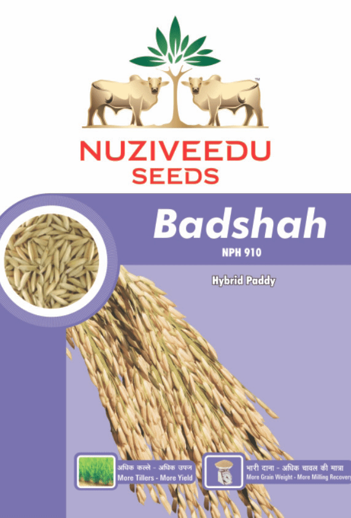

| Morphological Characters | |
|---|---|
| Hybrid Character: | Badshah (NPH- 910) |
| Duration (Seed to Seed) | Medium (130-135 days) |
| Seed Rate (Kg/acre) | 6 |
| Days to 50% flowering | 100-102 |
| Grain Type: | Long slender |
| Plant Height (cm) | 110 |
| Spikelet fertility % | 95 |
| Grain color | Straw |
| Panicle exertion | Well exerted |
| Diseases / Pests | Tolerance to brown spot and blast. (resistance / tolerance to specific diseases / pests) |
| Season / Sowing Time | The right time for sowing seeds is mid June for kharif season. (For North,mid May to mid June). |
| Areas of Adaptability: | Irrigated areas of Madhya Pradesh, Uttar Pradesh, Bihar, Jharkhand, Uttaranchal, Orissa, Chattisgarh, Haryana and West Bengal |
Special Features/USPs:
|
|